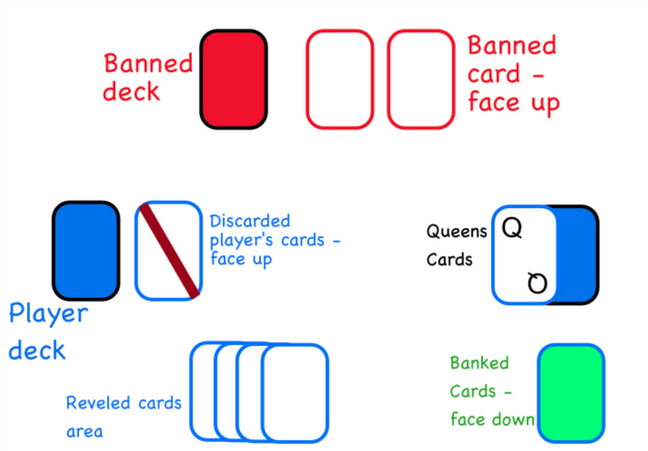

MAD QUEENS: A game of thrills, strategy and upset queens
Mad Queens is a strategy push-your-luck game that can be played with as many people as you like!
What do you need to play?
You need a standard playing card deck with jokers (54 cards) for each player, plus 1 deck (54 cards), which will be the banned deck. You are free to use any deck you like for each player.
Suggested play layout
Aim of the game and gameplay overview
The player with the most points wins: you get points by banking cards. Each banked card equals one point, two points if it is a heart suit. There are situations that will make you score even more points.
Setup
Each player removes the queens (Q) from their deck and puts them on the side - we will need them later, and shuffle the deck ready to play.
Shuffle the banned deck, place it in the middle and turn two cards: those cards will be the first 2 banned cards at the beginning of the game.
Finally, remember: hearts cards are worth two points! We are ready to play!

Player Actions
Player can perform two actions during their turn: - Reveal a card - Bank the card(s) After revealing a card, you can decide to reveal another one or to bank the card(s) you have shown. Your play ends when either you bank or you reveal a banned card.
All Together
In Mad Queens, there are no players’ turn: every player does their action autonomously and simultaneously by following the rules. Wait till all the players have ended their play before beginning a new one.
Reveal a card
You always begin your play by revealing the first card of your deck; if the card shown is not banned, you can continue to reveal the next card or you can decide to bank the card(s) you have been drawing.
Playing for the thrill
You are free to turn as many cards you want until you reveal a banned one. The more you turn cards, the higher the chances to end your turn without scoring points.
Reveal a banned card
There are always at least 2 banned cards to check when you turn a card from your deck. You always check the face of your revealed card against the banned card. If the values match, you discard all the revealed cards and your play ends.
BANNED CARDS: 8♠️ K♦️
You begin your turn and you turn the first card of your deck, that is 6❤️. Since the 6 is not banned, you decide to turn another card: 2♠️.
Again, 2 is not banned, you feel lucky and decide to turn one more card: 10♣️.
10 is not banned, now you can either bank or turn another card.
BANNED CARDS: A♠️ J♦️
You begin your turn and you show the first card of your deck, that is 2❤️.
Since the 2 is not banned, you decide to turn another card: J♠️.
The J is a banned card, you discard both the 2❤️ and J♠️ and your turn end without scoring any point.
Turn a new card from the banned cards deck to replace the J♦️.
Once all players have finished their play, turn a new card from the banned cards deck and replace whatever card banned was revealed. Do this action only if any player draws a banned card in their play.
Reveal the exact same banned card
If you reveal the exact same card that is banned, let say the J♠️, you don't discard all your cards! Instead, you automatically bank that card which will be worth double the points: to remember that, place it face up in your banked cards deck. Then, keep on playing as normal (eg. you can bank or draw another card).
Since the value of this card is doubled, it means that if it is a trump card, its value is 4 points; 2 points if it is any other card.
Reveal a Joker
If you reveal a Joker from your deck, you have to turn 2 extra cards from your deck. Once done, check if any of the two cards is banned or it is Queen. Resolve those events accordingly.
Otherwise, you are free to bank the revealed cards or to turn another card.
Reveal a Queen
If you reveal a Queen (Q) from your deck, you have to discard the top 2 cards from your banked card plus 1 card per revealed card that matches the suit of the Q. Then, discard the Q and show another card from your deck: continue the play as per normal.
Queens cannot be banked; keep them aside when discarded it is helpful to know how many Q you have still in the deck
BANNED CARDS: A♠️ J♦️ Your first card revealed is Q♦️. You discard 2 cards from your banked card, discard the Q and then you have to turn a new card from your deck. The card shown is a K❤️.
Since the K is not banned, you can decide either to bank or to turn another card.
BANNED CARDS: A♠️ J♦️ Your first card revealed is 2♦️. Since 2 is not banned, you turn another card: 3♠️. 3 is not banned and you feel lucky and decide to turn another card: unfortunately it is Q♦️.
You discard 2 cards from your banked card, plus one more card because the suit of the Q is ♦️ and you have revealed the 2♦️; you discard the Queen and then you have to turn a new card from your card. The card shown is a J❤️.
Since the J is banned, you have to discard all the revealed cards (2♦️, 3♠️, J❤️) and end your turn.
Beware the Queens!
If you cannot pay the amount of card required by the Q, your game is over and you calculate your final score.
Banking Cards
Every time you reveal a card from your deck that is not banned, you can decide to bank the cards revealed till now. Normally, every banked card will count as 1 at the end of the game (value of the cards are ignored, it will be a count of cards), 2 points if it is a trump suit.
Every time you bank cards, you must put one Q inside the deck (remember we start the game with the Q out of the deck?) and then shuffle it. If all your Q have been already added to your deck, add a temporary banned card in front of you - see next paragraph.
Banned Deck
The banned deck is put in the middle and two cards are turned face down before the beginning of the game.
Banned cards are in common: every player checks their revealed card against the 2 banned values.
Once all the players have ended their play, if a player has turned a banned card from his/her deck, replace that banned card with a new one from the Banned Deck before starting the next play.
2 cards with the same value cannot be shown at the same time. Turn cards from the banned deck until the 2 banned cards have different values.
Queens ad banned card
If a Q is shown as a banned card, the suit of the Q is considered banned. For instance, if Q♣️ is revealed, every card with a Club suit turned by the players is considered banned.
Joker as banned card
If a Joker is shown as a banned card, every player reveals 2 cards from their decks: if at least one of the shown cards matches with the 2 banned cards, that player must bank those cards. Then discard the Joker and turn another card from the banned deck.
Termporary banned cards
If a player has already shuffled their four Queens into their deck, that player will draw a card from the banned deck and place it in front of him/her - turn it 90 degrees to better identify it.
Temporary cards apply only to that player and follow the same rule as banned cards. Only exception to this is that temporary banned cards are not replaced: they get all discarded if a player triggers one of them.
A player can have multiple banned cards at the same time.
End of the Game
A player reaches the end of the game when: - The player cannot pay the effect of the Queens - The player reveals all four Queens from his/her deck (player must pay the effect of the last Q beforehand) - The player deck run of cards - Players can decide to end their game if there are 12 or less cards left in their deck.
Once all the players have ended their game, it is time to see who is the winner: check your banked cards deck and the player with the highest number of points wins!
Appendix
Game flow
Since there are no player’s turns and everybody resolve their plays individually, you can have people waiting for other players to decide what to do: for example, if the player next to me decide to bank, I could decide to turn another card since we have the same amount of points and that player could think the same. To avoid those standoff situations, players are encouraged to focus only on their play.
Players will begin the play at the same time and wait until all the players have resolved their actions; once that is done, check if any banned card needs to be replaced before beginning the next play.